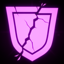
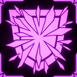

Shield Mage
你是一种一直太怕受伤的巫师。俗话说，有时候最好的进攻就是防守。大概是这样。
技能
主技能：Offensive Strike
向前投掷你的盾牌，造成 50 点物理伤害。使用 Defensive Stance 时，向前盾击，造成 25 点物理伤害并击退敌人。
副技能：Defensive Stance
按住以用盾牌防御，格挡命中盾牌的来袭伤害，并使你的移动速度降低 X%。
格挡攻击时会为 ICEBURST 充能。放下盾牌时释放 ICEBURST，在你周围半径内造成高额冰霜伤害；伤害与你承受的伤害成比例，威力与格挡的攻击数量成比例。
辅助技能：Evasive Maneuver
在原地停住 5 秒，在你周围生成不可穿透的护盾。该护盾会使 PURPLE 攻击伤害降低 50%。使用 Defensive Stance 时，则朝移动方向进行一次短冲刺。
冷却 4 到 16 秒，取决于护盾大小。
职业升级
| 图片 | 稀有度 | 技能 | 说明 | 叠加类型 |
|---|---|---|---|---|
| 普通 | Shieldmage: Proficiency | 提高 Defensive Stance 护盾的作用范围 X%，每层 X%。 | 双曲 | |
 |
普通 | Shieldmage: Unbreakable | 来自 Purple Attacks 的伤害 -5%；Evasive Maneuver 护盾激活时，来自 Purple Attacks 的伤害 -10%。 | 双曲 |
 |
稀有 | Shieldmage: Ice Burst | 每格挡一次攻击，提高 Ice Burst 的充能威力。 | 线性 |
| 稀有 | Shieldmage: Mastery | 提高 Evasive Maneuver 护盾尺寸 X%，每层 X%。 | 线性 | |
| 传奇 | Shieldmage: Rally Up | 使用 Evasive Maneuver 护盾会给予你和附近盟友短暂的 EMPOWERED 状态效果。 | 线性 | |
| 传奇 | Shieldmage: Warden | 使用 Evasive Maneuver 护盾会给予你和所有盟友 RESILIENCE 状态效果，使他们可以格挡一次伤害。辅助技能冷却 +100%。 | 线性 |